First, a little detour to describe several alternatives for reading in data:
If you navigate to my Github account, and find the 264_fall_2024 repo, there is a Data folder inside. You can then click on vacc_Mar21.csv to see the data we want to download. This link should also get you there, but it’s good to be able to navigate there yourself.
Approach 1: create a Data folder in the same location where this .qmd file resides, and then store vaccinations_2021.csv in that Data folder
2
Approach 2: give R the complete path to the location of vaccinations_2021.csv, starting with Home (~)
3
Approach 3: link to our course webpage, and then know we have a Data folder containing all our csvs
4
Approach 4: navigate to the data in GitHub, hit the Raw button, and copy that link
A recent Stat 272 project examined determinants of covid vaccination rates at the county level. Our data set contains 3053 rows (1 for each county in the US) and 14 columns; here is a quick description of the variables we’ll be using:
state = state the county is located in
county = name of the county
region = region the state is located in
metro_status = Is the county considered “Metro” or “Non-metro”?
rural_urban_code = from 1 (most urban) to 9 (most rural)
perc_complete_vac = percent of county completely vaccinated as of 11/9/21
tot_pop = total population in the county
votes_Trump = number of votes for Trump in the county in 2020
votes_Biden = number of votes for Biden in the county in 2020
perc_Biden = percent of votes for Biden in the county in 2020
ed_somecol_perc = percent with some education beyond high school (but not a Bachelor’s degree)
ed_bachormore_perc = percent with a Bachelor’s degree or more
unemployment_rate_2020 = county unemployment rate in 2020
median_HHincome_2019 = county’s median household income in 2019
Consider only Minnesota and its surrounding states (Iowa, Wisconsin, North Dakota, and South Dakota). We want to examine the relationship between the percentage who voted for Biden and the percentage of complete vaccinations by state. Generate two plots to examine this relationship:
A scatterplot with points and smoothers colored by state. Make sure the legend is ordered in a meaningful way, and include good labels on your axes and your legend. Also leave off the error bars from your smoothers.
One plot per state containing a scatterplot and a smoother.
Describe which plot you prefer and why. What can you learn from your preferred plot?
# Plot avaccine_data |>filter(state %in%c("Minnesota", "Iowa", "Wisconsin", "North Dakota", "South Dakota")) |>ggplot(mapping =aes(x = perc_Biden, y = perc_complete_vac, color =fct_reorder2(state, perc_Biden, perc_complete_vac))) +geom_point() +geom_smooth(se =FALSE) +labs(color ="State", x ="Percent of Biden votes",y ="Percent completely vaccinated",title ="The positive relationship between Biden votes and \n vaccination rates by county differs by state") +theme(axis.title =element_text(size =10),plot.title =element_text(size =12))
1
It’s good practice to give a title that provides a short summary of what the plot shows.
`geom_smooth()` using method = 'loess' and formula = 'y ~ x'
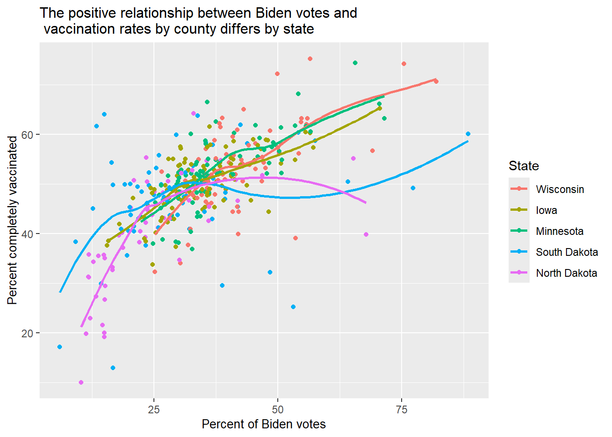
# Plot bvaccine_data |>filter(state %in%c("Minnesota", "Iowa", "Wisconsin", "North Dakota", "South Dakota")) |>ggplot(mapping =aes(x = perc_Biden, y = perc_complete_vac, color = state)) +geom_point() +geom_smooth() +facet_wrap(~ state) +labs(color ="State", x ="Percent of Biden votes",y ="Percent completely vaccinated",title ="The positive relationship between Biden votes and \n vaccination rates by county differs by state")
`geom_smooth()` using method = 'loess' and formula = 'y ~ x'
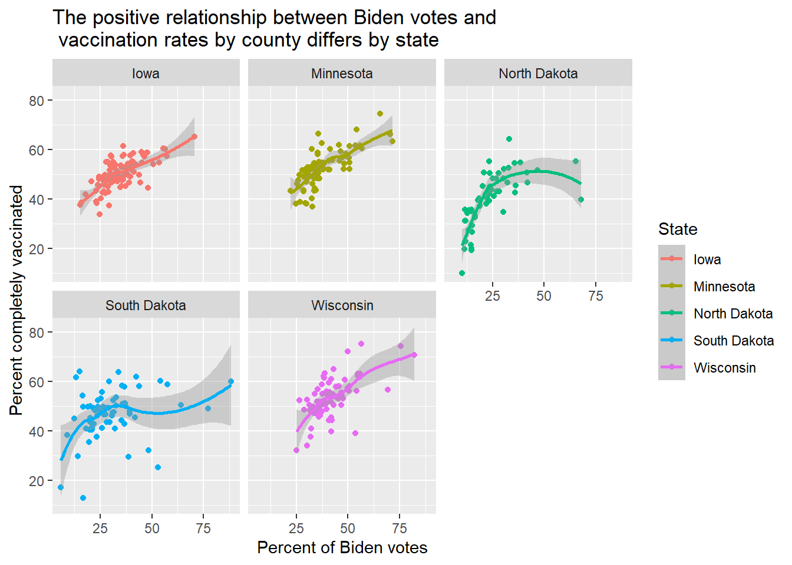
I kind of like the 5 states on a single plot because it’s easier to compare states in terms of their relative levels of vaccination and the strength of the positive relationship. From this plot, we see trends like a leveling out in North and South Dakota and the high vaccination rates in Biden-leaning Wisconsin counties.
We wish to compare the proportions of counties in each region with median household income above the national median ($69,560).
Fill in the blanks below to produce a segmented bar plot with regions ordered from highest proportion above the median to lowest.
see below
Create a table of proportions by region to illustrate that your bar plot in (a) is in the correct order (you should find two regions that are really close when you just try to eyeball differences).
see below
Explain why we can replace fct_relevel(region, FILL IN CODE) with
Since median_HHincome_2019 < 69560 is a logical (TRUE/FALSE) variable, taking the mean over all counties in a region produces a proportion, but taking a median will pick off just the one county in the middle, which is FALSE (0) in all regions, so ordering remains in the default order (alphabetical).
vaccine_data |>mutate(HHincome_vs_national =ifelse(median_HHincome_2019 <69560, FILL IN CODE)) |>mutate(region_sort =fct_relevel(region, FILL IN CODE)) |>ggplot(mapping =aes(x = region_sort, fill = HHincome_vs_national)) +geom_bar(position ="fill")
We want to examine the distribution of total county populations and then see how it’s related to vaccination rates.
Carefully and thoroughly explain why the two histograms below provide different plots.
vaccine_data |>mutate(tot_pop_millions = tot_pop /1000000) |>ggplot(mapping =aes(x = tot_pop_millions)) +geom_histogram(bins =40) +labs(x ="Total population in millions")
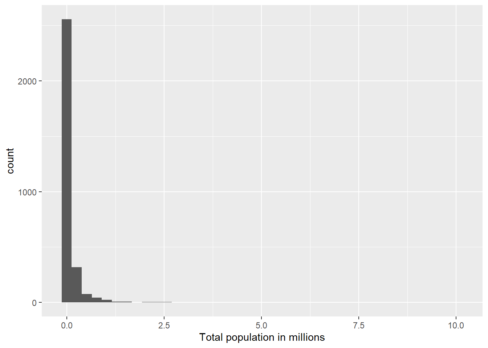
vaccine_data |>mutate(tot_pop_millions = tot_pop %/%1000000) |>ggplot(mapping =aes(x = tot_pop_millions)) +geom_histogram(bins =40) +labs(x ="Total population in millions")
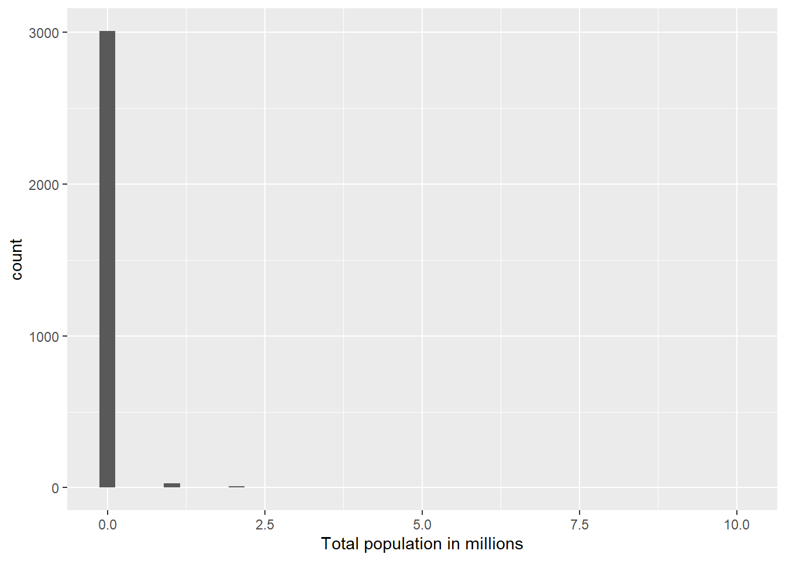
The first plot has a continuous range of decimals (e.g. 700,000 -> 0.7, 1,360,000 -> 1.36), while the second plot just picks off the millions place (e.g. 700,000 -> 0, 1,360,000 -> 1). So the second plot only shows integers 0, 1, 2, …
Find the top 5 counties in terms of total population.
This looks like a normal, bell-shaped, symmetric distribution centered just above 10.
Plot the relationship between log population and percent vaccinated using separate colors for Metro and Non-metro counties (be sure there’s no 3rd color used for NAs). Reduce the size and transparency of each point to make the plot more readable. Describe what you can learn from this plot.
vaccine_data |>count(metro_status)
# A tibble: 3 × 2
metro_status n
<chr> <int>
1 Metro 1157
2 Non-metro 1895
3 <NA> 1
vaccine_data |>filter(!is.na(metro_status)) |>mutate(log_pop =log(tot_pop)) |>ggplot(mapping =aes(x = log_pop, y = perc_complete_vac, color = metro_status)) +geom_point(size = .5, alpha = .5) +geom_smooth(method ="lm", se =FALSE)
`geom_smooth()` using formula = 'y ~ x'
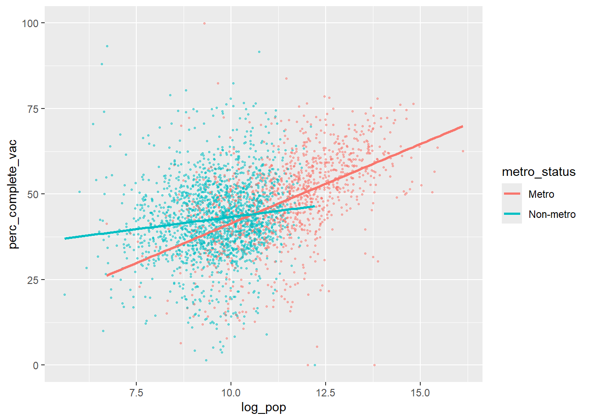
We see Metro counties tend to have higher populations, and that each 1 unit increase in log population is associated with a larger increase in vaccination rates for Metro than for Non-metro counties.
Produce 3 different plots for illustrating the relationship between the rural_urban_code and percent vaccinated. Hint: you can sometimes turn numeric variables into categorical variables for plotting purposes (e.g. as.factor(), ifelse()).
State your favorite plot, why you like it better than the other two, and what you can learn from your favorite plot.
vaccine_data |>ggplot(mapping =aes(x =as.factor(rural_urban_code), y = perc_complete_vac)) +geom_boxplot()
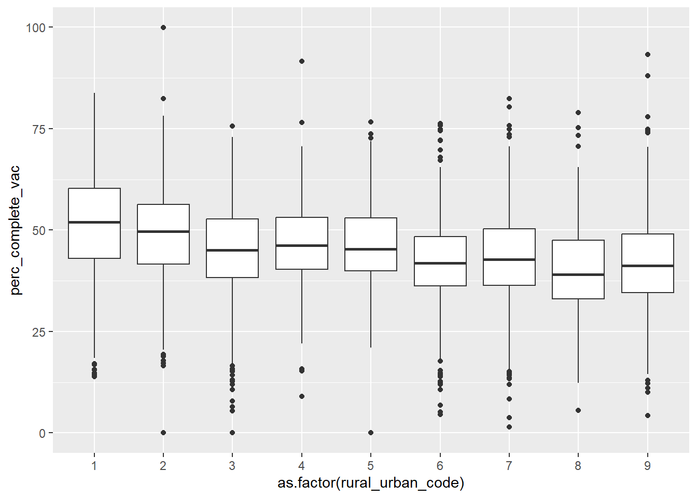
vaccine_data |>ggplot(mapping =aes(x =as.factor(rural_urban_code), y = perc_complete_vac)) +geom_violin()
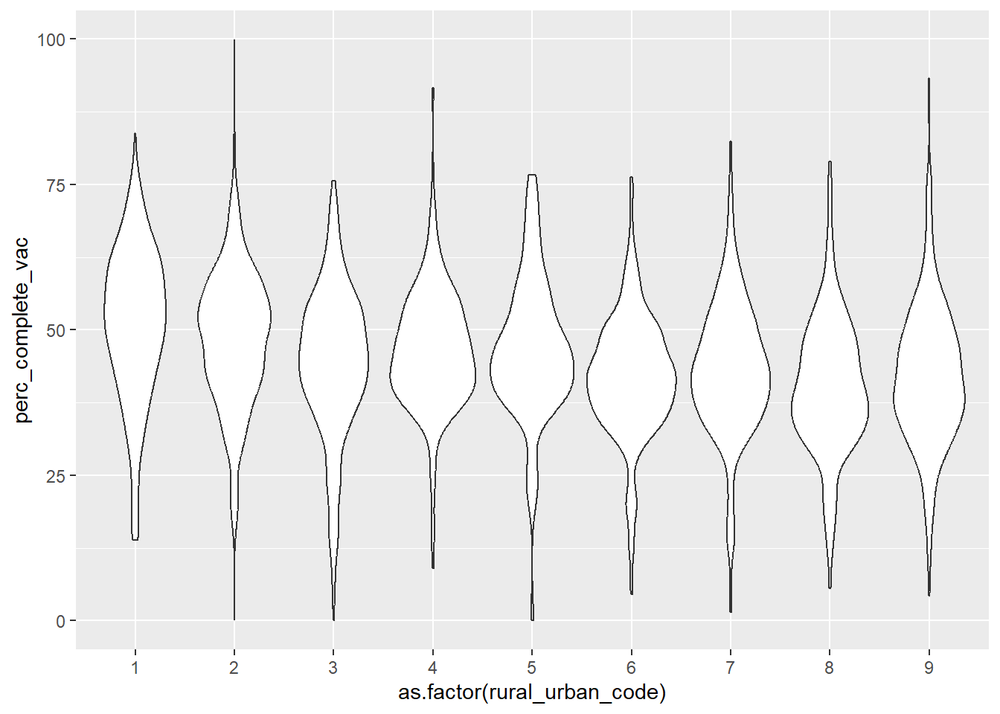
vaccine_data |>ggplot(mapping =aes(x =as.factor(rural_urban_code), y = perc_complete_vac)) +geom_violin() +geom_boxplot()
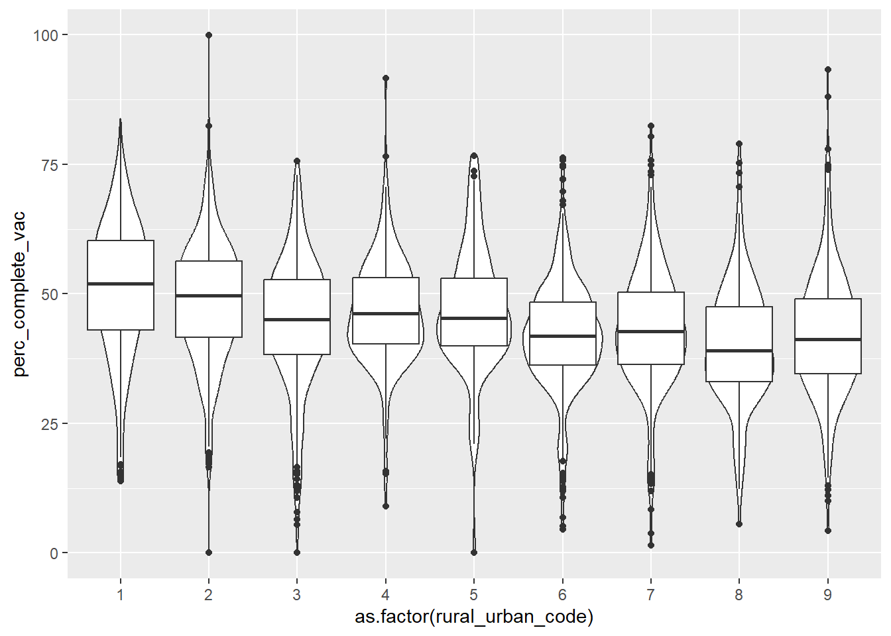
vaccine_data |>ggplot(mapping =aes(x =as.factor(rural_urban_code), fill = perc_complete_vac >50)) +geom_bar(position ="fill")
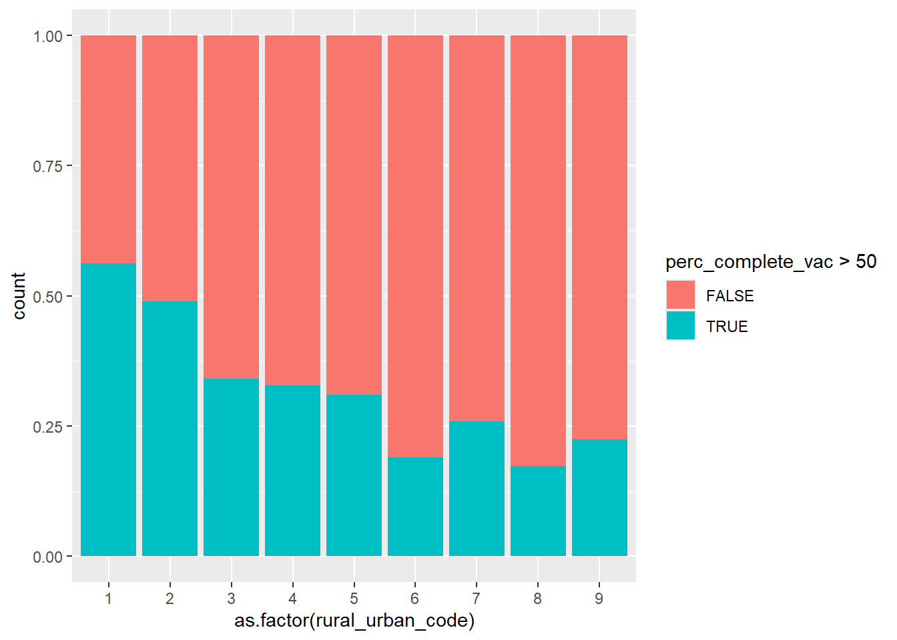
I kind of like the segmented bar plot. While you lose information by turning vaccination rate into a simple Above 50 / Below 50, the story is pretty clear - that the more urban a county is, the more likely its vaccination rate is above 50 percent.
BEFORE running the code below, sketch the plot that will be produced by R. AFTER running the code, describe what conclusion(s) can we draw from this plot?
vaccine_data |>filter(!is.na(perc_Biden)) |>mutate(big_states =fct_lump(state, n =10)) |>group_by(big_states) |>summarize(IQR_Biden =IQR(perc_Biden)) |>mutate(big_states =fct_reorder(big_states, IQR_Biden)) |>ggplot() +geom_point(aes(x = IQR_Biden, y = big_states))
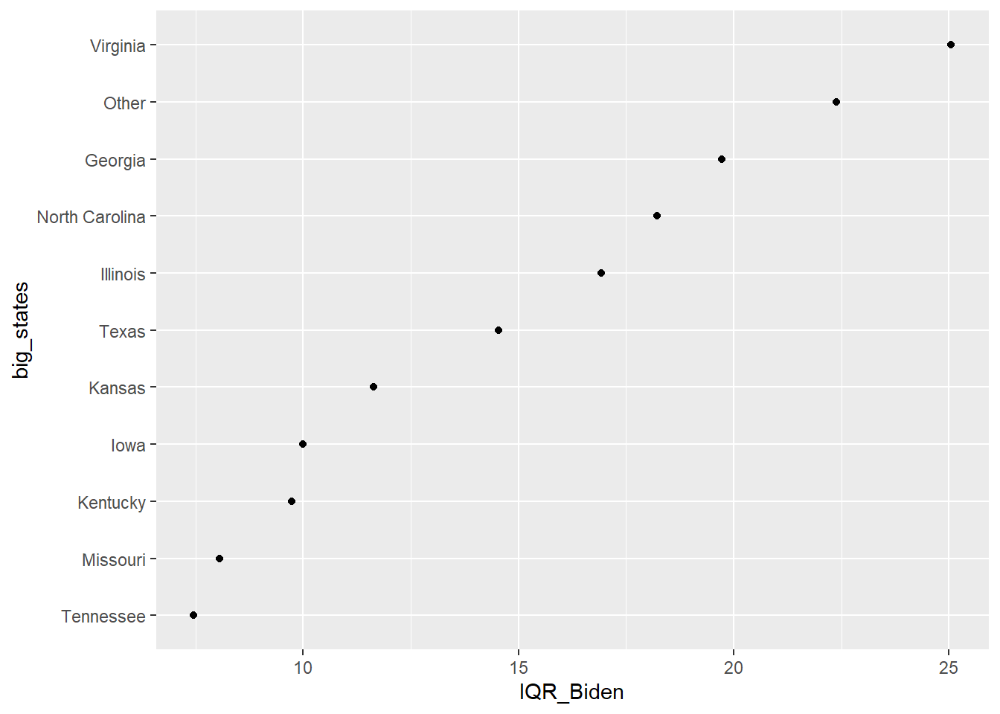
Virginia has the most spread among its counties (as measured by IQR) in Biden voting percentages, while Missouri and Tennessee have the least, among the 10 states with the most counties.
In this question we will focus only on the 12 states in the Midwest (i.e. where region == “Midwest”).
Create a tibble with the following information for each state. Order states from least to greatest state population.
number of different rural_urban_codes represented among the state’s counties (there are 9 possible)
total state population
proportion of Metro counties
median unemployment rate
Use your tibble in (a) to produce a plot of the relationship between proportion of Metro counties and median unemployment rate. Points should be colored by the number of different rural_urban_codes in a state, but a single linear trend should be fit to all points. What can you conclude from the plot?
Midwestern states with a high proportion of Metro counties tend to have higher median unemployment rates. States with a lower number of different urban/rural codes tend to have lower median unemployment rates.
Generate an appropriate plot to compare vaccination rates between two subregions of the US: New England (which contains the states Maine, Vermont, New Hampshire, Massachusetts, Connecticut, Rhode Island) and the Upper Midwest (which, according to the USGS, contains the states Minnesota, Wisconsin, Michigan, Illinois, Indiana, and Iowa). What can you conclude from your plot?
vaccine_data |>mutate(two_regions =fct_collapse(state, "New England"=c("Maine", "Vermont", "New Hampshire", "Massachusetts","Connecticut", "Rhode Island"),"Upper Midwest"=c("Minnesota", "Wisconsin", "Michigan", "Illinois","Indiana", "Iowa"))) |>filter(two_regions =="New England"| two_regions =="Upper Midwest") |>ggplot() +geom_boxplot(mapping =aes(x = perc_complete_vac, y = two_regions))
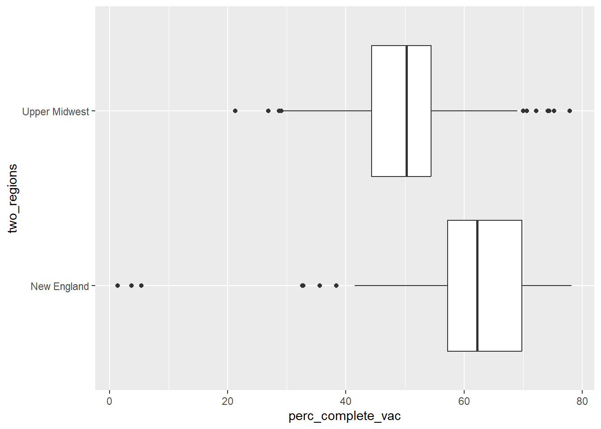
Vaccination rates are generally higher in New England counties (median 63 percent) than in the Upper Midwest (median 50 percent). The 25th percentile in New England is higher than the 75th percentile in the Upper Midwest.
In this next section, we consider a few variables that could have been included in our data set, but were NOT. Thus, you won’t be able to write and test code, but you nevertheless should be able to use your knowledge of the tidyverse to answer these questions.
Here are the hypothetical variables:
HR_party = party of that county’s US Representative (Republican, Democrat, Independent, Green, or Libertarian)
people_per_MD = number of residents per doctor (higher values = fewer doctors)
perc_over_65 = percent of residents over 65 years old
perc_white = percent of residents who identify as white
Describe the tibble temp created above. What would be the dimensions? What do rows and columns represent?
3 rows (for low, middle, high people per MD) and 4 columns (group name, number of counties in that group, average vaccination rate, and average percent white)
What would happen if we replaced new_perc_vac = ifelse(perc_complete_vac > 95, NA, perc_complete_vac) with new_perc_vac = ifelse(perc_complete_vac > 95, perc_complete_vac, NA)?
All vaccination rates below 95 would be set to missing, so mean_perc_vac would be based only on counties with rates of 95 percent or higher.
What would happen if we replaced mean_white = mean(perc_white, na.rm = TRUE) with mean_white = mean(perc_white)?
mean_white for a group would be reported as NA if even 1 county in that group had a missing perc_white.
What would happen if we removed group_by(MD_group)?
We’d get a 1 x 3 tibble with summary statistics across all counties.
Hypothetical R chunk #2:
# Hypothetical R chunk 2ggplot(data = vaccine_data) +geom_point(mapping =aes(x = perc_over_65, y = perc_complete_vac, color = HR_party)) +geom_smooth()temp <- vaccine_data |>group_by(HR_party) |>summarise(var1 =n()) |>arrange(desc(var1)) |>slice_head(n =3)vaccine_data |>ggplot(mapping =aes(x =fct_reorder(HR_party, perc_over_65, .fun = median), y = perc_over_65)) +geom_boxplot()
Why would the first plot produce an error?
There is no x and y variables defined for the smoother.
Describe the tibble temp created above. What would be the dimensions? What do rows and columns represent?
3 rows (top 3 parties in terms of counties represented) and 2 columns (party name and number of counties represented)
What would happen if we replaced fct_reorder(HR_party, perc_over_65, .fun = median) with HR_party?
The boxplot would feature parties in alphabetical order rather than increasing medians.
Hypothetical R chunk #3:
# Hypothetical R chunk 3vaccine_data |>filter(!is.na(people_per_MD)) |>mutate(state_lump =fct_lump(state, n =4)) |>group_by(state_lump, rural_urban_code) |>summarise(mean_people_per_MD =mean(people_per_MD)) |>ggplot(mapping =aes(x = rural_urban_code, y = mean_people_per_MD, colour =fct_reorder2(state_lump, rural_urban_code, mean_people_per_MD))) +geom_line()
Describe the tibble piped into the ggplot above. What would be the dimensions? What do rows and columns represent?
Just under 45 rows (one for each combination of the 4 top states plus other and the 9 rural_urban_codes, although not all states have all 9 codes), and 3 columns (state, rural/urban code, and mean number of people per MD)
Carefully describe the plot created above.
5 differently colored lines showing rural/urban code vs average people per MD for counties in the top 4 states (plus Other). Points are connected with straight lines segments, and the legend matches the ordering of average people per MD at a rural/urban code of 9.
What would happen if we removed filter(!is.na(people_per_MD))?
If any counties have missing people per MD, we’d have a few state/code combinations with missing averages.
What would happen if we replaced fct_reorder2(state_lump, rural_urban_code, mean_people_per_MD) with state_lump?
States would be in default ordering - usually alphabetical